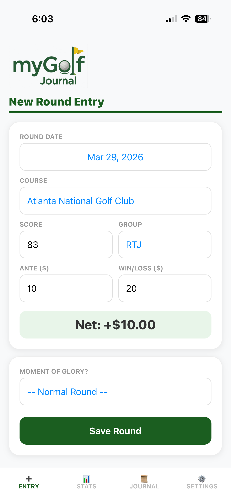
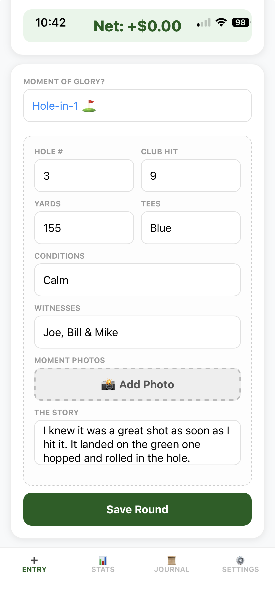
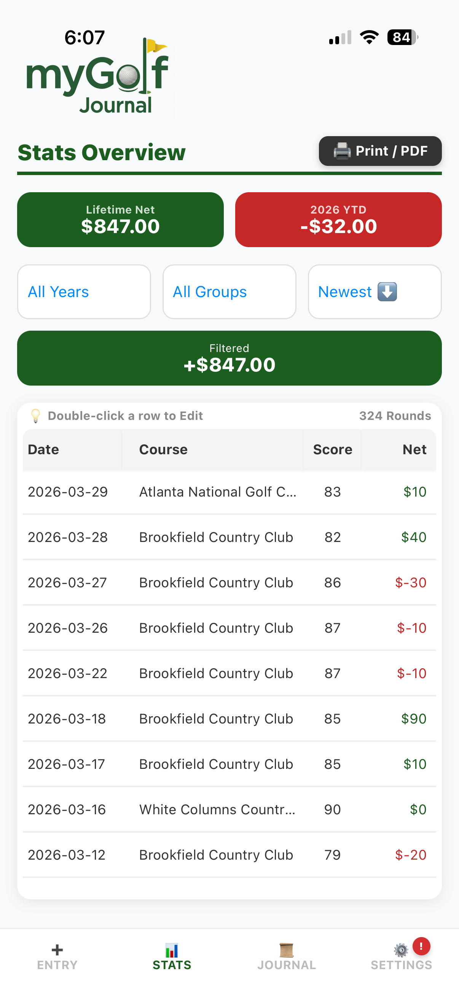
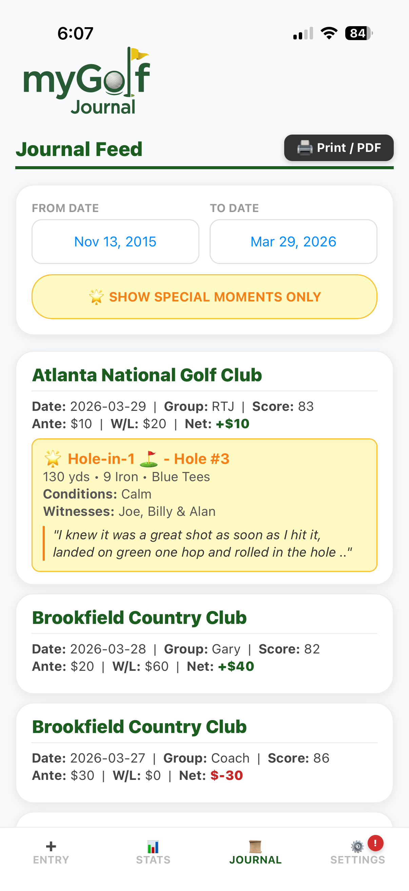
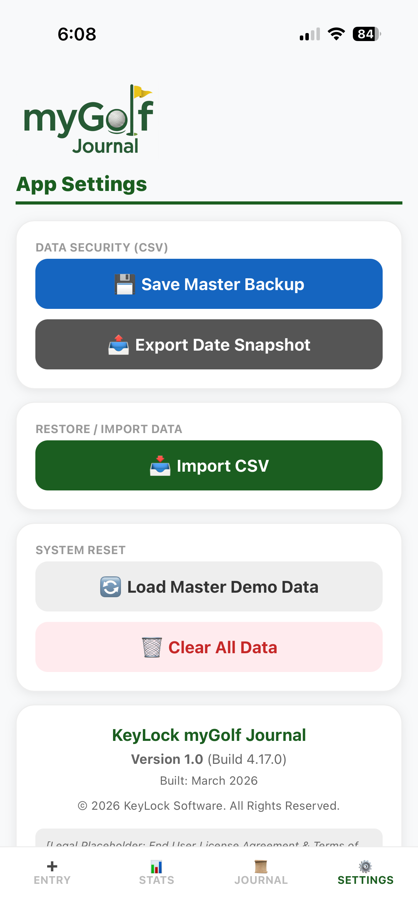
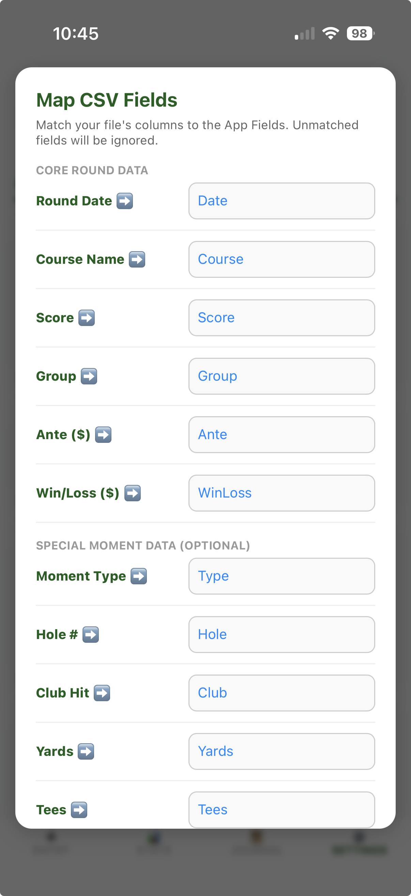

A fast, simple way to track Golf games with your friends. Enter the Date, Course, Score, Ante, and Win/Loss. KeyLock myGolf Journal instantly calculates your Net $ and helps you relive your greatest moments on the course.
Flexible Monthly and Yearly subscriptions available or a Lifetime option.
Start fresh or import your old CSV spreadsheets, track your current game, and save your data to your favorite cloud (iCloud, Google Drive, Dropbox, or OneDrive).
Know exactly where you stand. The Stats menu provides colored placards displaying your Lifetime Net & YTD Net winnings at a glance.
Easily sort your winnings by All Years, Selected Year, All Groups, or Selected Groups with dynamically updating placards.
Hit a Hole-in-1, Albatross, or Eagle? Document it. Add photos of your scorecard, the hole, or your friends to capture the memory forever.
Record your club info, tees played, yardage, course conditions, witnesses, and a full text recount of the shot.
Scroll through a beautiful visual timeline of your rounds. Each game is displayed on its own custom placard.
There is also a feature button to sort and view just your special moments, beautifully displaying your Hole-in-1, Double Eagles, Eagles, or just a speial moment that occured in your round.






Need help with the app or want to report an issue? We're here to assist.
Report a Bug / Contact SupportIf you currently have your golf records saved in a standard Excel or Numbers spreadsheet (which usually ends in .xlsx or .numbers), you will need to save a copy of it as a CSV (Comma Separated Values) file.
A CSV file strips away all the visual styling and leaves just the raw data, which is exactly what our import tool needs to read your history correctly. You can keep your original beautifully formatted spreadsheet for your own records, and use the new CSV file strictly for this import.
To ensure your golf rounds import perfectly into myGolf Journal, your CSV needs to be completely clean.
The Golden Rules of Importing:
.csv file.Expected Column Headers:
(Note: Your columns do not need to be in this exact order, nor do you need to include every single field. As long as the header names are close, our tool will recognize them.)
While the app can import many more data points, these are the core fields you should have for your initial import:
💡 Pro-Tip: If your spreadsheet has gaps or missing data, it is much easier and faster to fill those blanks in using Excel before you import the file into the app!
Ready to Import?
Go to the Settings menu in the app, select "Import", and choose your new CSV file. The app will automatically try to map your data fields, and you can adjust them via the dropdowns. The import will intelligently merge rounds based on the Date and Course Name to prevent duplicates.
💡 Pro-Tip: Because KeyLock myGolf respects your privacy, your data is stored securely on your device, not on our servers. Don't forget to visit the Settings menu occasionally to create a Full Data Backup of your memories!
• Device & OS: What phone are you using? (e.g., iPhone 15 Pro, iOS 17.4)
• App Version & Build Info: You can find this in the app's Settings under "About Us".
• Description: A step-by-step description of what you were doing when the issue occurred.
• Expected vs. Actual Result: Tell us what you expected to happen, and what actually happened.
• Screenshots: If applicable, please attach screenshots of the error or visual issue.
⚠️ Important Security and Privacy Notice: As stated in our Privacy Policy, standard email is not a secure form of communication. Please do not include sensitive personal information, financial data, or passwords in your emails. KeyLock Software does not have access to your locally stored golf data, and our support team will never ask you to provide your database file or cloud login credentials.
KeyLock myGolf Journal is a strictly local-first, private app. We do not require user accounts and we never sync your data to our servers. To ensure your privacy, your myGolf Journal user data lives strictly on your device. However, your data is automatically backed up by Apple as long as you have myGolf Journal selected in your iPhone’s nightly iCloud Backup settings. Because we cannot recover your data if you lose your device, we strongly encourage regularly saving a secure, manual copy using the Backup and Export tools in the Settings menu to your personal iCloud, Google Drive, or Dropbox.
If you use Apple’s "Device-to-Device Transfer" or "Restore from iCloud Backup" when setting up your new iPhone, your KeyLock myGolf app and all its data will automatically transfer to your new device. However, if you are setting up your phone as a "Brand New Device," you will need to manually restore your data. We highly recommend using the Full Data Backup tool to save your database to iCloud Drive or Dropbox before you switch phones, just to be safe!
• Full Archive (ZIP) : Once selected, the app will ask if you want to Replace all current data (perfect for setting up a new phone) or Merge the backup with your existing data (great for recovering a few deleted rounds without losing new ones).
• Spreadsheet (CSV): If you are importing a custom spreadsheet from another app or your own records, a smart "mapping" screen will pop up. This lets you easily match your spreadsheet columns to the app's fields so your history imports perfectly without creating duplicates.
⚠️ Note: For your privacy and security, KeyLock myGolf Journal cannot automatically scan, manage, or delete files stored on your personal iCloud Drive.
Because the data is stored locally, deleting the app will permanently wipe your database. Always remember to use the Export to CSV function and or performing a Full Data Backup to back up your database file before deleting the app or moving to a new device.
⚠️ CRITICAL WARNING: The app will ask you twice to confirm before wiping your database, but please ensure you have performed a Full Data Backup (ZIP) to your personal cloud storage before using this button, just in case you change your mind!
No. Subscriptions are exclusively managed by the Apple App Store and Google Play Store. A subscription purchased on an iPhone will not carry over to an Android device, and vice versa. You will need to purchase a new license if you switch operating systems.